大洗はマジで『ガルパン』一色だった……
執筆日時：
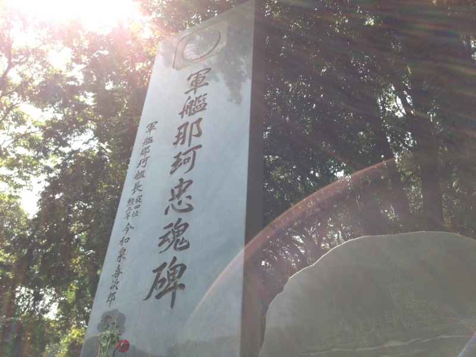
さて、無事に目的を遂げた（艦これ：巡洋艦・那珂ちゃんのお墓詣りしてきた - だるろぐ）わけだけど、せっかく大洗に来たのだし、『ガールズ&パンツァー』の聖地巡礼もしておくのが礼儀というものだろう。
『ガールズ&パンツァー』、略して『ガルパン』（http://girls-und-panzer.jp/）というのは、茨城県にある小さな港町・大洗を舞台とした戦車系萌えアニメ……だと思う。
戦車を使った武道である戦車道が華道や茶道と並び大和撫子の嗜みとされている世界を描いた物語で、兵器である戦車を美少女達が運用するという、ミリタリーと萌え要素を併せ持つ作品。サンクスのほか、大洗町の店舗や宿泊施設、交通機関、役場や商工会などが協力・応援しており、街並、各種施設、交通機関がほぼ忠実に再現され、一部は実名で登場する。タイトルの「パンツァー (Panzer) 」はドイツ語で「Panzer Kampf Wagen」（装甲戦闘車輌）の略系、すなわち「戦車」を意味する。
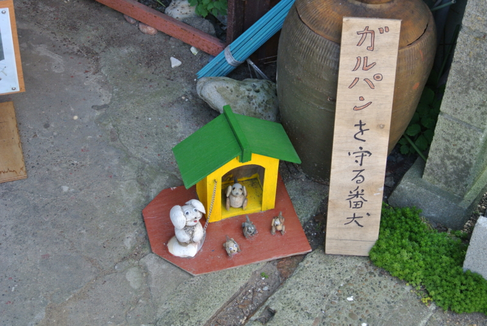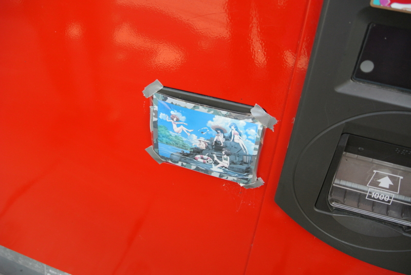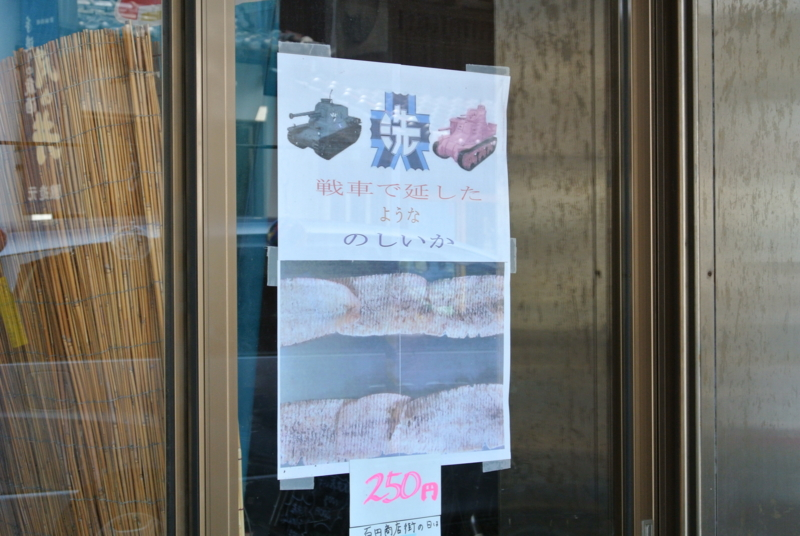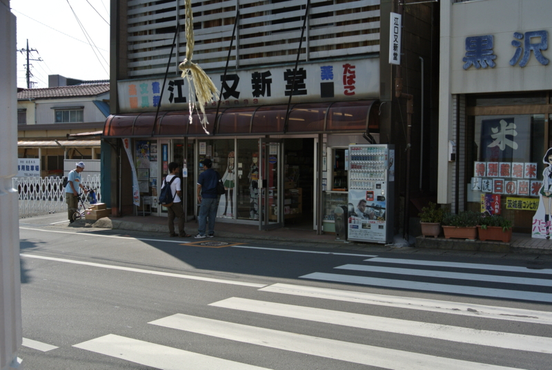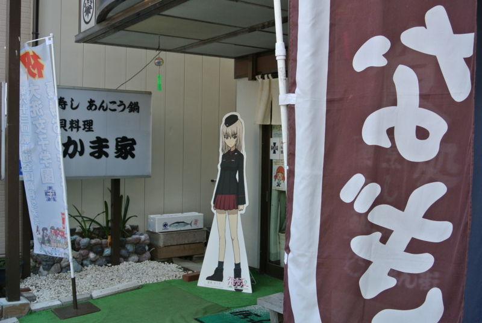
放映終了からは結構建っていると思うのだけど、ャラクターの等身大パネルが街のありとあらゆる店先に立っていて、それを記念撮影していくファンで賑わっている。海外から来るひともいるようで、アジア系の言葉かな？ グループで笑って喋りながら歩く姿も見られた。
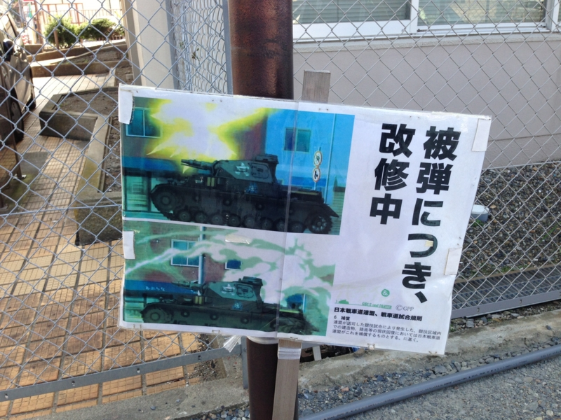
なんだか街全体が『ガルパン』のアミューズメントパークみたい。アニメとリアルが微妙にリンクしていて面白い。
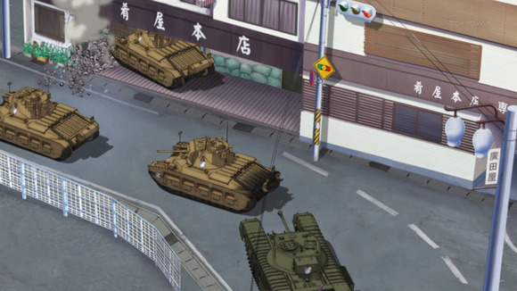
たとえば、劇中で戦車が突っ込んだ旅館も……
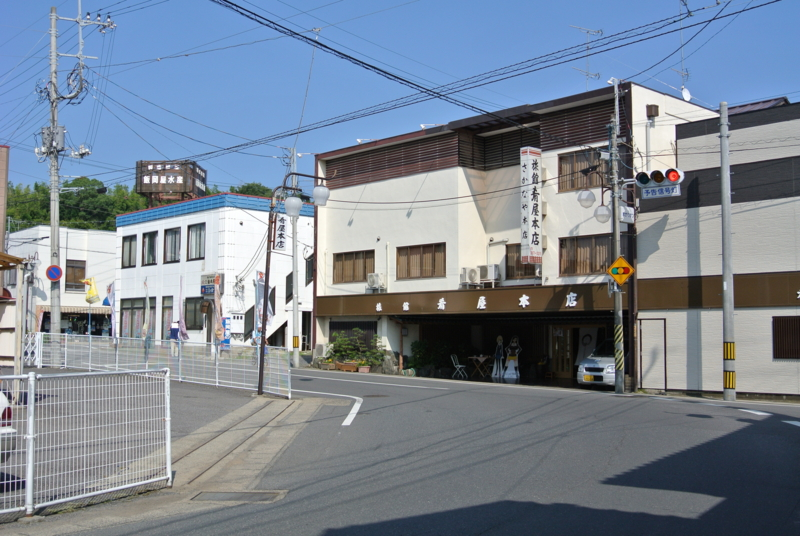
みつけた！ そのまんまだ。
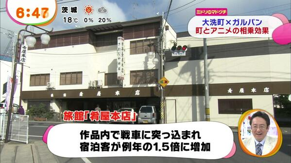
ちなみにこの宿、宿泊客がかなり増えたんだそうな。劇中で「新しく建て直せる！」「羨ましい！ ウチにもぶつからないかなぁ」みたいなやりとりがあったけど（戦車が突っ込むと戦車道の組合か何かが弁償してくれるっぽい）、リアルでもアニメで戦車に突っ込まれたことを羨む人がいたのではないか。
そんなこんなで、ガルパン一色の大洗。ただ、街で会ったお婆さんに挨拶をして少しだけお話したのだけど、「大洗も……なんでこんなのが流行ってるのかさっぱりわからない」とおっしゃっていたので、なかにはこのような状況に戸惑っている人もいるのかも。こうやってアニメ一色でもてなされると「みんなこのアニメ大好きなのか」とついつい勘違いしちゃったりするけれど、みんながみんな肯定的ではないことは十分自覚して、マナーだけは守ってほしいものですね。
結局、その日はだいぶ歩いたことでもあるし、大洗で泊まることにした。ここで @daisuke_nomura とはお別れ。夕飯には @jz5 と二人で名物「戦車寿司」を食べに行った。
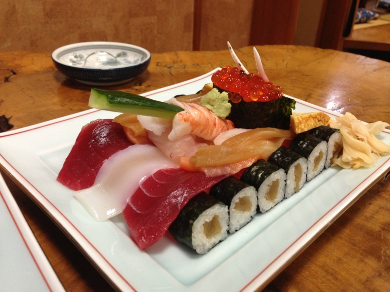
それがこれ。
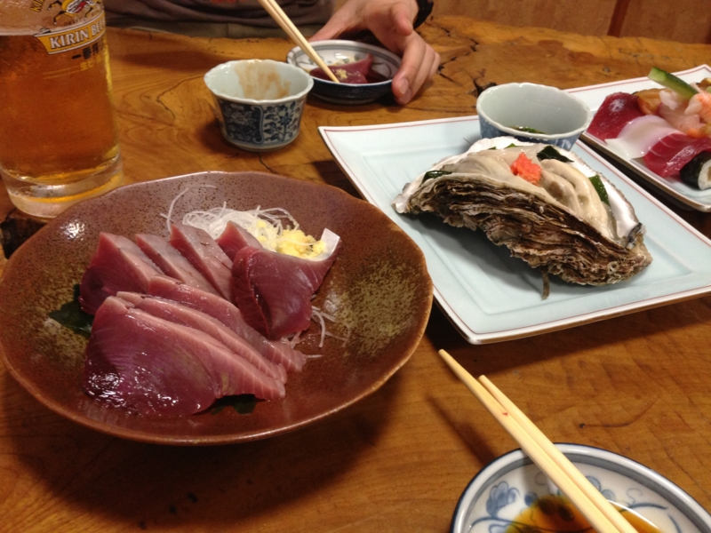
正直、一発ネタというか、実物を見ただけでもう満足ｗ でも、ほかのメニューが結構美味しくて、二人でかなり食べてしまった。
夕方は7時からの営業なのかな？ よくリサーチしてなくて準備中にお邪魔してしまったのだけど、営業時間を繰り上げて入れてくださいました。かたじけなし。